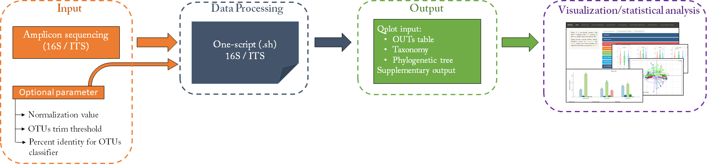
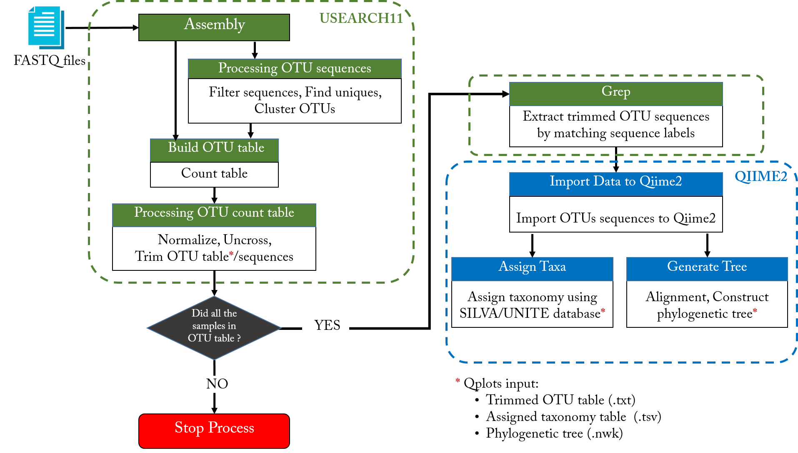

One-script is a Unix shell script allows to analyse microbial communities obtained from next generation sequencing of 16S ribosomal RNA (16S rRNA) and internal transcribed spacer (ITS). It is based on USEARCH-11 and Qiime2 tools.
This script produce mainly OTU table, Assigned taxonomy and phylogentic tree needed for downstream analysis in Qplots pipeline using Fastq files as an input. the Figure bellow shows an overview of the general process.

Fig.1 - Microbial analysis overview
Find scripts:
Analysis Steps:
1. Assembly: Assemble (merge) paired-end reads to create consensus sequences.
2. Filter sequences: Filter reads in FASTQ file based on expected errors number (e.e) (discard reads if e.e > 1%, and convert to FASTA format).
3. Find uniques: Find the set of unique sequences in the filtered FASTA file.
4. Cluster OTUs: Cluster OTU sequences at 97% using the UPARSE-OTU algorithm and discards singleton unique sequences.
5. OTU table: Generate OTU table.
6. Normalize OTU table: Normalize all samples to the same number of reads to remove the effect of differential sampling size (based on normalization value parameter (default: 50000)).
7. Uncross: Identify and filter cross-talk in an OTU table (cross-talk error occurs when a read is assigned to an incorrect sample).
8. Trim OTU table: Remove low-abundance counts, samples and OTUs from an OTU table based on OTUs trim threshold parameter (Minimum size for an OTU as fraction of all OTUs (default: 0.001)).
9. Grep: Extract trimmed OTU sequences by matching sequence labels.
10. Import OTUs to Qiime2: Import trimmed OTU sequences to QIIME2.
11. Assign taxa: Assign taxonomy to query sequences using BLAST+ based on SILVA (16S) or UNITE (ITS) database and percent identity parameter (Reject match if percent identity to query is lower (default: 0.97)).
12. Align Sequences: Perform de novo multiple sequence alignment using MAFFT.
13. Phylogeny tree: Construct a phylogenetic tree with FastTree.
14. Midpoint tree: Midpoint root an unrooted phylogenetic tree.

Fig.2 - One-script analysis steps